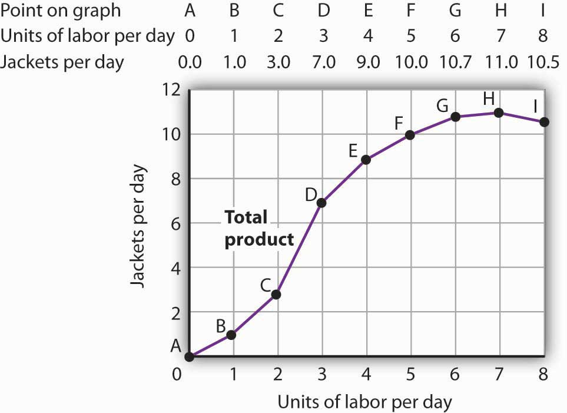
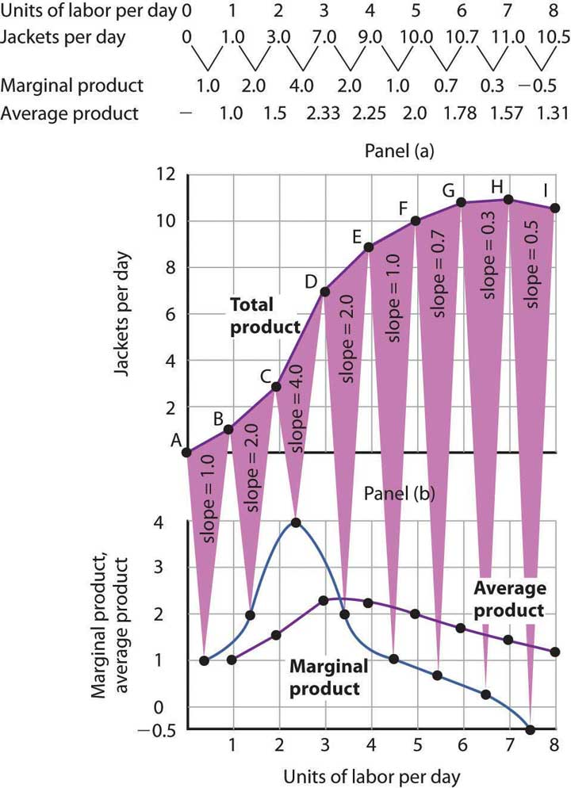
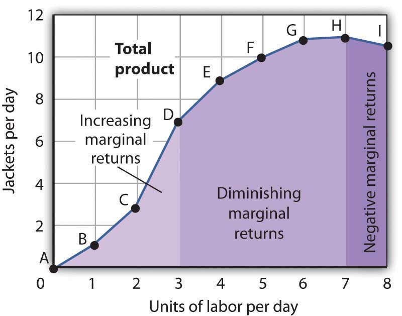
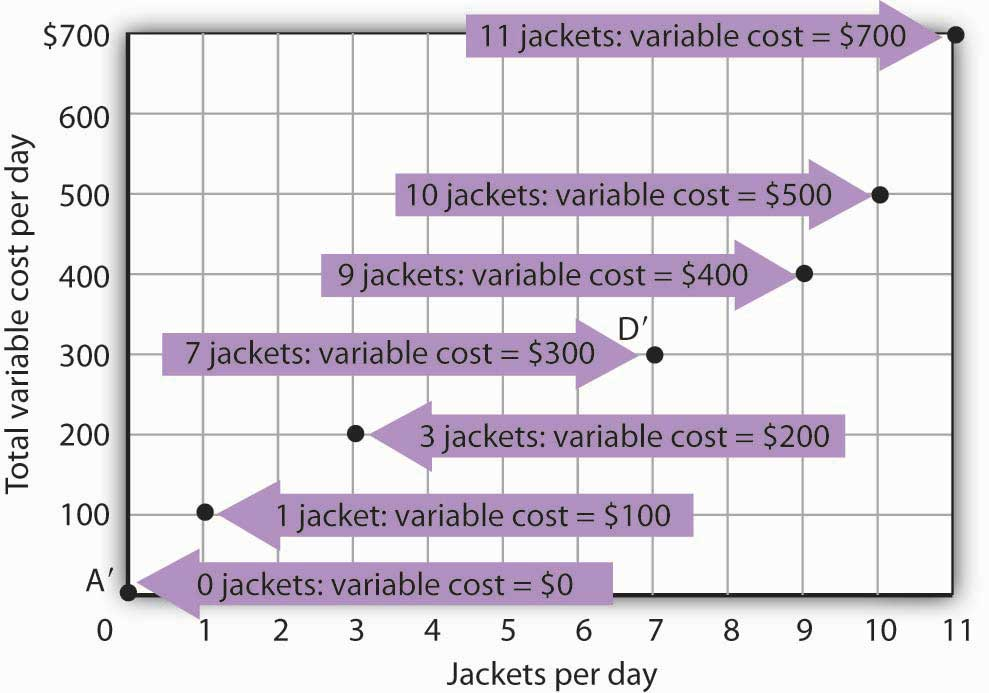
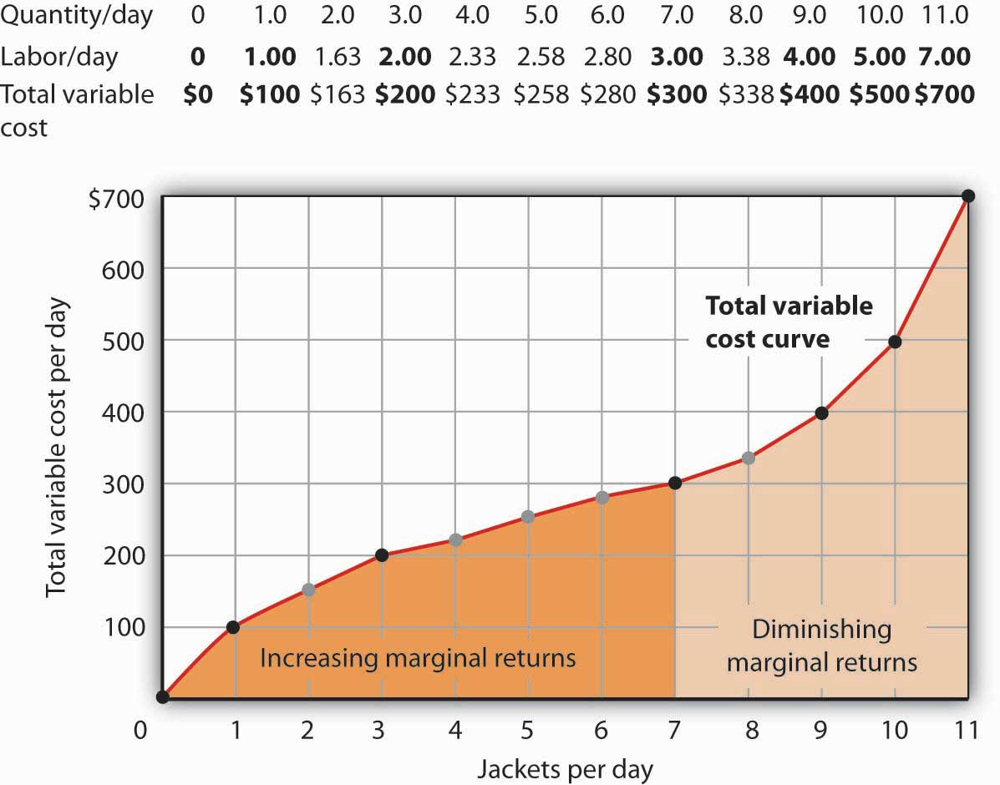
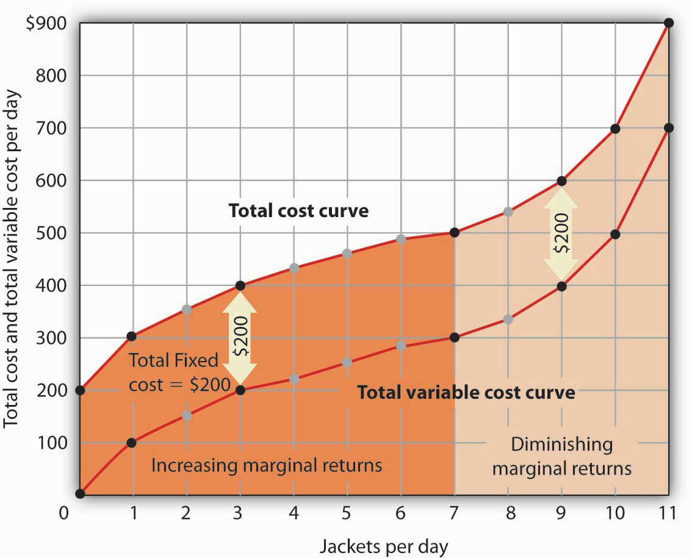
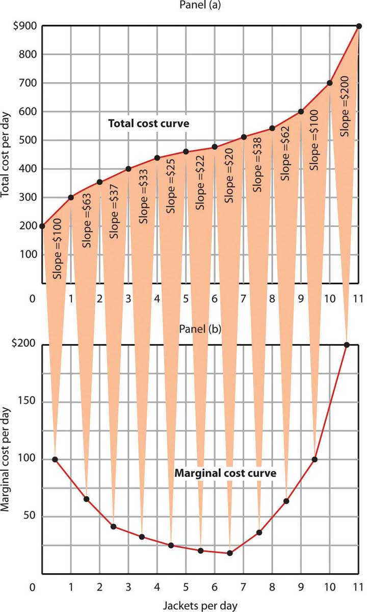

It is dawn in Shanghai, China. Already thousands of Chinese are out cleaning the city’s streets. They are using brooms.
On the other side of the world, night falls in Washington, D.C., where the streets are also being cleaned—by a handful of giant street-sweeping machines driven by a handful of workers.
The difference in method is not the result of a greater knowledge of modern technology in the United States—the Chinese know perfectly well how to build street-sweeping machines. It is a production decision based on costs in the two countries. In China, where wages are relatively low, an army of workers armed with brooms is the least expensive way to produce clean streets. In Washington, where labor costs are high, it makes sense to use more machinery and less labor.
All types of production efforts require choices in the use of factors of production. In this chapter we examine such choices. Should a good or service be produced using relatively more labor and less capital? Or should relatively more capital and less labor be used? What about the use of natural resources?
In this chapter we see why firms make the production choices they do and how their costs affect their choices. We will apply the marginal decision rule to the production process and see how this rule ensures that production is carried out at the lowest cost possible. We examine the nature of production and costs in order to gain a better understanding of supply. We thus shift our focus to firmsOrganizations that produce goods and services., organizations that produce goods and services. In producing goods and services, firms combine the factors of production—labor, capital, and natural resources—to produce various products.
Economists assume that firms engage in production in order to earn a profit and that they seek to make this profit as large as possible. That is, economists assume that firms apply the marginal decision rule as they seek to maximize their profits. Whether we consider the operator of a shoe-shine stand at an airport or the firm that produces airplanes, we will find there are basic relationships between the use of factors of production and output levels, and between output levels and costs, that apply to all production. The production choices of firms and their associated costs are at the foundation of supply.
Our analysis of production and cost begins with a period economists call the short run. The short runA planning period over which the managers of a firm must consider one or more of their factors of production as fixed in quantity. in this microeconomic context is a planning period over which the managers of a firm must consider one or more of their factors of production as fixed in quantity. For example, a restaurant may regard its building as a fixed factor over a period of at least the next year. It would take at least that much time to find a new building or to expand or reduce the size of its present facility. Decisions concerning the operation of the restaurant during the next year must assume the building will remain unchanged. Other factors of production could be changed during the year, but the size of the building must be regarded as a constant.
When the quantity of a factor of production cannot be changed during a particular period, it is called a fixed factor of productionA factor of production whose quantity cannot be changed during a particular period.. For the restaurant, its building is a fixed factor of production for at least a year. A factor of production whose quantity can be changed during a particular period is called a variable factor of productionA factor of production whose quantity can be changed during a particular period.; factors such as labor and food are examples.
While the managers of the restaurant are making choices concerning its operation over the next year, they are also planning for longer periods. Over those periods, managers may contemplate alternatives such as modifying the building, building a new facility, or selling the building and leaving the restaurant business. The planning period over which a firm can consider all factors of production as variable is called the long runThe planning period over which a firm can consider all factors of production as variable..
At any one time, a firm will be making both short-run and long-run choices. The managers may be planning what to do for the next few weeks and for the next few years. Their decisions over the next few weeks are likely to be short-run choices. Decisions that will affect operations over the next few years may be long-run choices, in which managers can consider changing every aspect of their operations. Our analysis in this section focuses on the short run. We examine long-run choices later in this chapter.
A firm uses factors of production to produce a product. The relationship between factors of production and the output of a firm is called a production functionThe relationship between factors of production and the output of a firm.. Our first task is to explore the nature of the production function.
Consider a hypothetical firm, Acme Clothing, a shop that produces jackets. Suppose that Acme has a lease on its building and equipment. During the period of the lease, Acme’s capital is its fixed factor of production. Acme’s variable factors of production include things such as labor, cloth, and electricity. In the analysis that follows, we shall simplify by assuming that labor is Acme’s only variable factor of production.
Figure 8.1 "Acme Clothing’s Total Product Curve" shows the number of jackets Acme can obtain with varying amounts of labor (in this case, tailors) and its given level of capital. A total product curveGraph that shows the quantities of output that can be obtained from different amounts of a variable factor of production, assuming other factors of production are fixed. shows the quantities of output that can be obtained from different amounts of a variable factor of production, assuming other factors of production are fixed.
Figure 8.1 Acme Clothing’s Total Product Curve
The table gives output levels per day for Acme Clothing Company at various quantities of labor per day, assuming the firm’s capital is fixed. These values are then plotted graphically as a total product curve.
Notice what happens to the slope of the total product curve in Figure 8.1 "Acme Clothing’s Total Product Curve". Between 0 and 3 units of labor per day, the curve becomes steeper. Between 3 and 7 workers, the curve continues to slope upward, but its slope diminishes. Beyond the seventh tailor, production begins to decline and the curve slopes downward.
We measure the slope of any curve as the vertical change between two points divided by the horizontal change between the same two points. The slope of the total product curve for labor equals the change in output (ΔQ) divided by the change in units of labor (ΔL):
The slope of a total product curve for any variable factor is a measure of the change in output associated with a change in the amount of the variable factor, with the quantities of all other factors held constant. The amount by which output rises with an additional unit of a variable factor is the marginal productThe amount by which output rises with an additional unit of a variable factor. of the variable factor. Mathematically, marginal product is the ratio of the change in output to the change in the amount of a variable factor. The marginal product of laborThe amount by which output rises with an additional unit of labor. (MPL), for example, is the amount by which output rises with an additional unit of labor. It is thus the ratio of the change in output to the change in the quantity of labor (ΔQ/ΔL), all other things unchanged. It is measured as the slope of the total product curve for labor.
Equation 8.1
In addition we can define the average productThe output per unit of variable factor. of a variable factor. It is the output per unit of variable factor. The average product of laborThe ratio of output to the number of units of labor (Q/L). (APL), for example, is the ratio of output to the number of units of labor (Q/L).
Equation 8.2
The concept of average product is often used for comparing productivity levels over time or in comparing productivity levels among nations. When you read in the newspaper that productivity is rising or falling, or that productivity in the United States is nine times greater than productivity in China, the report is probably referring to some measure of the average product of labor.
The total product curve in Panel (a) of Figure 8.2 "From Total Product to the Average and Marginal Product of Labor" is repeated from Figure 8.1 "Acme Clothing’s Total Product Curve". Panel (b) shows the marginal product and average product curves. Notice that marginal product is the slope of the total product curve, and that marginal product rises as the slope of the total product curve increases, falls as the slope of the total product curve declines, reaches zero when the total product curve achieves its maximum value, and becomes negative as the total product curve slopes downward. As in other parts of this text, marginal values are plotted at the midpoint of each interval. The marginal product of the fifth unit of labor, for example, is plotted between 4 and 5 units of labor. Also notice that the marginal product curve intersects the average product curve at the maximum point on the average product curve. When marginal product is above average product, average product is rising. When marginal product is below average product, average product is falling.
Figure 8.2 From Total Product to the Average and Marginal Product of Labor
The first two rows of the table give the values for quantities of labor and total product from Figure 8.1 "Acme Clothing’s Total Product Curve". Marginal product, given in the third row, is the change in output resulting from a one-unit increase in labor. Average product, given in the fourth row, is output per unit of labor. Panel (a) shows the total product curve. The slope of the total product curve is marginal product, which is plotted in Panel (b). Values for marginal product are plotted at the midpoints of the intervals. Average product rises and falls. Where marginal product is above average product, average product rises. Where marginal product is below average product, average product falls. The marginal product curve intersects the average product curve at the maximum point on the average product curve.
As a student you can use your own experience to understand the relationship between marginal and average values. Your grade point average (GPA) represents the average grade you have earned in all your course work so far. When you take an additional course, your grade in that course represents the marginal grade. What happens to your GPA when you get a grade that is higher than your previous average? It rises. What happens to your GPA when you get a grade that is lower than your previous average? It falls. If your GPA is a 3.0 and you earn one more B, your marginal grade equals your GPA and your GPA remains unchanged.
The relationship between average product and marginal product is similar. However, unlike your course grades, which may go up and down willy-nilly, marginal product always rises and then falls, for reasons we will explore shortly. As soon as marginal product falls below average product, the average product curve slopes downward. While marginal product is above average product, whether marginal product is increasing or decreasing, the average product curve slopes upward.
As we have learned, maximizing behavior requires focusing on making decisions at the margin. For this reason, we turn our attention now toward increasing our understanding of marginal product.
Adding the first worker increases Acme’s output from 0 to 1 jacket per day. The second tailor adds 2 jackets to total output; the third adds 4. The marginal product goes up because when there are more workers, each one can specialize to a degree. One worker might cut the cloth, another might sew the seams, and another might sew the buttonholes. Their increasing marginal products are reflected by the increasing slope of the total product curve over the first 3 units of labor and by the upward slope of the marginal product curve over the same range. The range over which marginal products are increasing is called the range of increasing marginal returnsThe range over which each additional unit of a variable factor adds more to total output than the previous unit.. Increasing marginal returns exist in the context of a total product curve for labor, so we are holding the quantities of other factors constant. Increasing marginal returns may occur for any variable factor.
The fourth worker adds less to total output than the third; the marginal product of the fourth worker is 2 jackets. The data in Figure 8.2 "From Total Product to the Average and Marginal Product of Labor" show that marginal product continues to decline after the fourth worker as more and more workers are hired. The additional workers allow even greater opportunities for specialization, but because they are operating with a fixed amount of capital, each new worker adds less to total output. The fifth tailor adds only a single jacket to total output. When each additional unit of a variable factor adds less to total output, the firm is experiencing diminishing marginal returnsThe range over which each additional unit of a variable factor adds less to total output than the previous unit.. Over the range of diminishing marginal returns, the marginal product of the variable factor is positive but falling. Once again, we assume that the quantities of all other factors of production are fixed. Diminishing marginal returns may occur for any variable factor. Panel (b) shows that Acme experiences diminishing marginal returns between the third and seventh workers, or between 7 and 11 jackets per day.
After the seventh unit of labor, Acme’s fixed plant becomes so crowded that adding another worker actually reduces output. When additional units of a variable factor reduce total output, given constant quantities of all other factors, the company experiences negative marginal returnsThe range over which additional units of a variable factor reduce total output, given constant quantities of all other factors.. Now the total product curve is downward sloping, and the marginal product curve falls below zero. Figure 8.3 "Increasing Marginal Returns, Diminishing Marginal Returns, and Negative Marginal Returns" shows the ranges of increasing, diminishing, and negative marginal returns. Clearly, a firm will never intentionally add so much of a variable factor of production that it enters a range of negative marginal returns.
Figure 8.3 Increasing Marginal Returns, Diminishing Marginal Returns, and Negative Marginal Returns
This graph shows Acme’s total product curve from Figure 8.1 "Acme Clothing’s Total Product Curve" with the ranges of increasing marginal returns, diminishing marginal returns, and negative marginal returns marked. Acme experiences increasing marginal returns between 0 and 3 units of labor per day, diminishing marginal returns between 3 and 7 units of labor per day, and negative marginal returns beyond the 7th unit of labor.
The idea that the marginal product of a variable factor declines over some range is important enough, and general enough, that economists state it as a law. The law of diminishing marginal returnsThe marginal product of any variable factor of production will eventually decline, assuming the quantities of other factors of production are unchanged. holds that the marginal product of any variable factor of production will eventually decline, assuming the quantities of other factors of production are unchanged.
It is easy to confuse the concept of diminishing marginal returns with the idea of negative marginal returns. To say a firm is experiencing diminishing marginal returns is not to say its output is falling. Diminishing marginal returns mean that the marginal product of a variable factor is declining. Output is still increasing as the variable factor is increased, but it is increasing by smaller and smaller amounts. As we saw in Figure 8.2 "From Total Product to the Average and Marginal Product of Labor" and Figure 8.3 "Increasing Marginal Returns, Diminishing Marginal Returns, and Negative Marginal Returns", the range of diminishing marginal returns was between the third and seventh workers; over this range of workers, output rose from 7 to 11 jackets. Negative marginal returns started after the seventh worker.
To see the logic of the law of diminishing marginal returns, imagine a case in which it does not hold. Say that you have a small plot of land for a vegetable garden, 10 feet by 10 feet in size. The plot itself is a fixed factor in the production of vegetables. Suppose you are able to hold constant all other factors—water, sunshine, temperature, fertilizer, and seed—and vary the amount of labor devoted to the garden. How much food could the garden produce? Suppose the marginal product of labor kept increasing or was constant. Then you could grow an unlimited quantity of food on your small plot—enough to feed the entire world! You could add an unlimited number of workers to your plot and still increase output at a constant or increasing rate. If you did not get enough output with, say, 500 workers, you could use 5 million; the five-millionth worker would add at least as much to total output as the first. If diminishing marginal returns to labor did not occur, the total product curve would slope upward at a constant or increasing rate.
The shape of the total product curve and the shape of the resulting marginal product curve drawn in Figure 8.2 "From Total Product to the Average and Marginal Product of Labor" are typical of any firm for the short run. Given its fixed factors of production, increasing the use of a variable factor will generate increasing marginal returns at first; the total product curve for the variable factor becomes steeper and the marginal product rises. The opportunity to gain from increased specialization in the use of the variable factor accounts for this range of increasing marginal returns. Eventually, though, diminishing returns will set in. The total product curve will become flatter, and the marginal product curve will fall.
A firm’s costs of production depend on the quantities and prices of its factors of production. Because we expect a firm’s output to vary with the firm’s use of labor in a specific way, we can also expect the firm’s costs to vary with its output in a specific way. We shall put our information about Acme’s product curves to work to discover how a firm’s costs vary with its level of output.
We distinguish between the costs associated with the use of variable factors of production, which are called variable costsThe costs associated with the use of variable factors of production., and the costs associated with the use of fixed factors of production, which are called fixed costsThe costs associated with the use of fixed factors of production.. For most firms, variable costs includes costs for raw materials, salaries of production workers, and utilities. The salaries of top management may be fixed costs; any charges set by contract over a period of time, such as Acme’s one-year lease on its building and equipment, are likely to be fixed costs. A term commonly used for fixed costs is overhead. Notice that fixed costs exist only in the short run. In the long run, the quantities of all factors of production are variable, so that all long-run costs are variable.
Total variable cost (TVC)Cost that varies with the level of output. is cost that varies with the level of output. Total fixed cost (TFC)Cost that does not vary with output. is cost that does not vary with output. Total cost (TC)The sum of total variable cost and total fixed cost. is the sum of total variable cost and total fixed cost:
Equation 8.3
Next we illustrate the relationship between Acme’s total product curve and its total costs. Acme can vary the quantity of labor it uses each day, so the cost of this labor is a variable cost. We assume capital is a fixed factor of production in the short run, so its cost is a fixed cost.
Suppose that Acme pays a wage of $100 per worker per day. If labor is the only variable factor, Acme’s total variable costs per day amount to $100 times the number of workers it employs. We can use the information given by the total product curve, together with the wage, to compute Acme’s total variable costs.
We know from Figure 8.1 "Acme Clothing’s Total Product Curve" that Acme requires 1 worker working 1 day to produce 1 jacket. The total variable cost of a jacket thus equals $100. Three units of labor produce 7 jackets per day; the total variable cost of 7 jackets equals $300. Figure 8.4 "Computing Variable Costs" shows Acme’s total variable costs for producing each of the output levels given in Figure 8.1 "Acme Clothing’s Total Product Curve".
Figure 8.4 "Computing Variable Costs" gives us costs for several quantities of jackets, but we need a bit more detail. We know, for example, that 7 jackets have a total variable cost of $300. What is the total variable cost of 6 jackets?
Figure 8.4 Computing Variable Costs
The points shown give the variable costs of producing the quantities of jackets given in the total product curve in Figure 8.1 "Acme Clothing’s Total Product Curve" and Figure 8.2 "From Total Product to the Average and Marginal Product of Labor". Suppose Acme’s workers earn $100 per day. If Acme produces 0 jackets, it will use no labor—its variable cost thus equals $0 (Point A′). Producing 7 jackets requires 3 units of labor; Acme’s variable cost equals $300 (Point D′).
We can estimate total variable costs for other quantities of jackets by inspecting the total product curve in Figure 8.1 "Acme Clothing’s Total Product Curve". Reading over from a quantity of 6 jackets to the total product curve and then down suggests that the Acme needs about 2.8 units of labor to produce 6 jackets per day. Acme needs 2 full-time and 1 part-time tailors to produce 6 jackets. Figure 8.5 "The Total Variable Cost Curve" gives the precise total variable costs for quantities of jackets ranging from 0 to 11 per day. The numbers in boldface type are taken from Figure 8.4 "Computing Variable Costs"; the other numbers are estimates we have assigned to produce a total variable cost curve that is consistent with our total product curve. You should, however, be certain that you understand how the numbers in boldface type were found.
Figure 8.5 The Total Variable Cost Curve
Total variable costs for output levels shown in Acme’s total product curve were shown in Figure 8.4 "Computing Variable Costs". To complete the total variable cost curve, we need to know the variable cost for each level of output from 0 to 11 jackets per day. The variable costs and quantities of labor given in Figure 8.4 "Computing Variable Costs" are shown in boldface in the table here and with black dots in the graph. The remaining values were estimated from the total product curve in Figure 8.1 "Acme Clothing’s Total Product Curve" and Figure 8.2 "From Total Product to the Average and Marginal Product of Labor". For example, producing 6 jackets requires 2.8 workers, for a variable cost of $280.
Suppose Acme’s present plant, including the building and equipment, is the equivalent of 20 units of capital. Acme has signed a long-term lease for these 20 units of capital at a cost of $200 per day. In the short run, Acme cannot increase or decrease its quantity of capital—it must pay the $200 per day no matter what it does. Even if the firm cuts production to zero, it must still pay $200 per day in the short run.
Acme’s total cost is its total fixed cost of $200 plus its total variable cost. We add $200 to the total variable cost curve in Figure 8.5 "The Total Variable Cost Curve" to get the total cost curve shown in Figure 8.6 "From Variable Cost to Total Cost".
Figure 8.6 From Variable Cost to Total Cost
We add total fixed cost to the total variable cost to obtain total cost. In this case, Acme’s total fixed cost equals $200 per day.
Notice something important about the shapes of the total cost and total variable cost curves in Figure 8.6 "From Variable Cost to Total Cost". The total cost curve, for example, starts at $200 when Acme produces 0 jackets—that is its total fixed cost. The curve rises, but at a decreasing rate, up to the seventh jacket. Beyond the seventh jacket, the curve becomes steeper and steeper. The slope of the total variable cost curve behaves in precisely the same way.
Recall that Acme experienced increasing marginal returns to labor for the first three units of labor—or the first seven jackets. Up to the third worker, each additional worker added more and more to Acme’s output. Over the range of increasing marginal returns, each additional jacket requires less and less additional labor. The first jacket required one tailor; the second required the addition of only a part-time tailor; the third required only that Acme boost that part-time tailor’s hours to a full day. Up to the seventh jacket, each additional jacket requires less and less additional labor, and thus costs rise at a decreasing rate; the total cost and total variable cost curves become flatter over the range of increasing marginal returns.
Acme experiences diminishing marginal returns beyond the third unit of labor—or the seventh jacket. Notice that the total cost and total variable cost curves become steeper and steeper beyond this level of output. In the range of diminishing marginal returns, each additional unit of a factor adds less and less to total output. That means each additional unit of output requires larger and larger increases in the variable factor, and larger and larger increases in costs.
Marginal and average cost curves, which will play an important role in the analysis of the firm, can be derived from the total cost curve. Marginal cost shows the additional cost of each additional unit of output a firm produces. This is a specific application of the general concept of marginal cost presented earlier. Given the marginal decision rule’s focus on evaluating choices at the margin, the marginal cost curve takes on enormous importance in the analysis of a firm’s choices. The second curve we shall derive shows the firm’s average total cost at each level of output. Average total cost (ATC)Total cost divided by quantity; it is the firm’s total cost per unit of output. is total cost divided by quantity; it is the firm’s total cost per unit of output:
Equation 8.4
We shall also discuss average variable costTotal variable cost divided by quantity; it is the firm’s total variable cost per unit of output.s (AVC), which is the firm’s variable cost per unit of output; it is total variable cost divided by quantity:
Equation 8.5
We are still assessing the choices facing the firm in the short run, so we assume that at least one factor of production is fixed. Finally, we will discuss average fixed costTotal fixed cost divided by quantity. (AFC), which is total fixed cost divided by quantity:
Equation 8.6
Marginal cost (MC) is the amount by which total cost rises with an additional unit of output. It is the ratio of the change in total cost to the change in the quantity of output:
Equation 8.7
It equals the slope of the total cost curve. Figure 8.7 "Total Cost and Marginal Cost" shows the same total cost curve that was presented in Figure 8.6 "From Variable Cost to Total Cost". This time the slopes of the total cost curve are shown; these slopes equal the marginal cost of each additional unit of output. For example, increasing output from 6 to 7 units ( ) increases total cost from $480 to $500 ( ). The seventh unit thus has a marginal cost of $20 ( ). Marginal cost falls over the range of increasing marginal returns and rises over the range of diminishing marginal returns.
Notice that the various cost curves are drawn with the quantity of output on the horizontal axis. The various product curves are drawn with quantity of a factor of production on the horizontal axis. The reason is that the two sets of curves measure different relationships. Product curves show the relationship between output and the quantity of a factor; they therefore have the factor quantity on the horizontal axis. Cost curves show how costs vary with output and thus have output on the horizontal axis.
Figure 8.7 Total Cost and Marginal Cost
Marginal cost in Panel (b) is the slope of the total cost curve in Panel (a).
Figure 8.8 "Marginal Cost, Average Fixed Cost, Average Variable Cost, and Average Total Cost in the Short Run" shows the computation of Acme’s short-run average total cost, average variable cost, and average fixed cost and graphs of these values. Notice that the curves for short-run average total cost and average variable cost fall, then rise. We say that these cost curves are U-shaped. Average fixed cost keeps falling as output increases. This is because the fixed costs are spread out more and more as output expands; by definition, they do not vary as labor is added. Since average total cost (ATC) is the sum of average variable cost (AVC) and average fixed cost (AFC), i.e.,
Equation 8.8
the distance between the ATC and AVC curves keeps getting smaller and smaller as the firm spreads its overhead costs over more and more output.
Figure 8.8 Marginal Cost, Average Fixed Cost, Average Variable Cost, and Average Total Cost in the Short Run

Total cost figures for Acme Clothing are taken from Figure 8.7 "Total Cost and Marginal Cost". The other values are derived from these. Average total cost (ATC) equals total cost divided by quantity produced; it also equals the sum of the average fixed cost (AFC) and average variable cost (AVC) (exceptions in table are due to rounding to the nearest dollar); average variable cost is variable cost divided by quantity produced. The marginal cost (MC) curve (from Figure 8.7 "Total Cost and Marginal Cost") intersects the ATC and AVC curves at the lowest points on both curves. The AFC curve falls as quantity increases.
Figure 8.8 "Marginal Cost, Average Fixed Cost, Average Variable Cost, and Average Total Cost in the Short Run" includes the marginal cost data and the marginal cost curve from Figure 8.7 "Total Cost and Marginal Cost". The marginal cost curve intersects the average total cost and average variable cost curves at their lowest points. When marginal cost is below average total cost or average variable cost, the average total and average variable cost curves slope downward. When marginal cost is greater than short-run average total cost or average variable cost, these average cost curves slope upward. The logic behind the relationship between marginal cost and average total and variable costs is the same as it is for the relationship between marginal product and average product.
We turn next in this chapter to an examination of production and cost in the long run, a planning period in which the firm can consider changing the quantities of any or all factors.

Assuming labor is the variable factor of production, the following definitions and relations describe production and cost in the short run:
Suppose Acme gets some new equipment for producing jackets. The table below gives its new production function. Compute marginal product and average product and fill in the bottom two rows of the table. Referring to Figure 8.2 "From Total Product to the Average and Marginal Product of Labor", draw a graph showing Acme’s new total product curve. On a second graph, below the one showing the total product curve you drew, sketch the marginal and average product curves. Remember to plot marginal product at the midpoint between each input level. On both graphs, shade the regions where Acme experiences increasing marginal returns, diminishing marginal returns, and negative marginal returns.
How much should an athlete train?
Sports physiologists often measure the “total product” of training as the increase in an athlete’s aerobic capacity—the capacity to absorb oxygen into the bloodstream. An athlete can be thought of as producing aerobic capacity using a fixed factor (his or her natural capacity) and a variable input (exercise). The chart shows how this aerobic capacity varies with the number of workouts per week. The curve has a shape very much like a total product curve—which, after all, is precisely what it is.
The data suggest that an athlete experiences increasing marginal returns from exercise for the first three days of training each week; indeed, over half the total gain in aerobic capacity possible is achieved. A person can become even more fit by exercising more, but the gains become smaller with each added day of training. The law of diminishing marginal returns applies to training.
The increase in fitness that results from the sixth and seventh workouts each week is small. Studies also show that the costs of daily training, in terms of increased likelihood of injury, are high. Many trainers and coaches now recommend that athletes—at all levels of competition—take a day or two off each week.
Source: Jeff Galloway, Galloway’s Book on Running (Bolinas, CA: Shelter Publications, 2002), p. 56.
In a long-run planning perspective, a firm can consider changing the quantities of all its factors of production. That gives the firm opportunities it does not have in the short run. First, the firm can select the mix of factors it wishes to use. Should it choose a production process with lots of labor and not much capital, like the street sweepers in China? Or should it select a process that uses a great deal of capital and relatively little labor, like street sweepers in the United States? The second thing the firm can select is the scale (or overall size) of its operations. In the short run, a firm can increase output only by increasing its use of a variable factor. But in the long run, all factors are variable, so the firm can expand the use of all of its factors of production. The question facing the firm in the long run is: How much of an expansion or contraction in the scale of its operations should it undertake? Alternatively, it could choose to go out of business.
In its long-run planning, the firm not only regards all factors as variable, but it regards all costs as variable as well. There are no fixed costs in the long run. Because all costs are variable, the structure of costs in the long run differs somewhat from what we saw in the short run.
How shall a firm decide what mix of capital, labor, and other factors to use? We can apply the marginal decision rule to answer this question.
Suppose a firm uses capital and labor to produce a particular good. It must determine how to produce the good and the quantity it should produce. We address the question of how much the firm should produce in subsequent chapters, but certainly the firm will want to produce whatever quantity it chooses at as low a cost as possible. Another way of putting that goal is to say that the firm seeks the maximum output possible at every level of total cost.
At any level of total cost, the firm can vary its factor mix. It could, for example, substitute labor for capital in a way that leaves its total cost unchanged. In terms of the marginal decision rule, we can think of the firm as considering whether to spend an additional $1 on one factor, hence $1 less on another. The marginal decision rule says that a firm will shift spending among factors as long as the marginal benefit of such a shift exceeds the marginal cost.
What is the marginal benefit, say, of an additional $1 spent on capital? An additional unit of capital produces the marginal product of capital. To determine the marginal benefit of $1 spent on capital, we divide capital’s marginal product by its price: MPK/PK. The price of capital is the “rent” paid for the use of a unit of capital for a given period. If the firm already owns the capital, then this rent is an opportunity cost; it represents the return the firm could get by renting the capital to another user or by selling it and earning interest on the money thus gained.
If capital and labor are the only factors, then spending an additional $1 on capital while holding total cost constant means taking $1 out of labor. The cost of that action will be the output lost from cutting back $1 worth of labor. That cost equals the ratio of the marginal product of labor to the price of labor, MPL/PL, where the price of labor is the wage.
Suppose that a firm’s marginal product of labor is 15 and the price of labor is $5 per unit; the firm gains 3 units of output by spending an additional $1 on labor. Suppose further that the marginal product of capital is 50 and the price of capital is $50 per unit, so the firm would lose 1 unit of output by spending $1 less on capital.
The firm achieves a net gain of 2 units of output, without any change in cost, by transferring $1 from capital to labor. It will continue to transfer funds from capital to labor as long as it gains more output from the additional labor than it loses in output by reducing capital. As the firm shifts spending in this fashion, however, the marginal product of labor will fall and the marginal product of capital will rise. At some point, the ratios of marginal product to price will be equal for the two factors. At this point, the firm will obtain the maximum output possible for a given total cost:
Equation 8.9
Suppose that a firm that uses capital and labor is satisfying Equation 8.9 when suddenly the price of labor rises. At the current usage levels of the factors, a higher price of labor (PL′) lowers the ratio of the marginal product of labor to the price of labor:
The firm will shift funds out of labor and into capital. It will continue to shift from labor to capital until the ratios of marginal product to price are equal for the two factors. In general, a profit-maximizing firm will seek a combination of factors such that
Equation 8.10
When a firm satisfies the condition given in Equation 8.10 for efficient use, it produces the greatest possible output for a given cost. To put it another way, the firm achieves the lowest possible cost for a given level of output.
As the price of labor rises, the firm will shift to a factor mix that uses relatively more capital and relatively less labor. As a firm increases its ratio of capital to labor, we say it is becoming more capital intensiveSituation in which a firm has a high ratio of capital to labor.. A lower price for labor will lead the firm to use relatively more labor and less capital, reducing its ratio of capital to labor. As a firm reduces its ratio of capital to labor, we say it is becoming more labor intensiveSituation in which a firm has a high ratio of labor to capital.. The notions of labor-intensive and capital-intensive production are purely relative; they imply only that a firm has a higher or lower ratio of capital to labor.
Sometimes economists speak of labor-intensive versus capital-intensive countries in the same manner. One implication of the marginal decision rule for factor use is that firms in countries where labor is relatively expensive, such as the United States, will use capital-intensive production methods. Less developed countries, where labor is relatively cheap, will use labor-intensive methods.
Now that we understand how to apply the marginal decision rule to the problem of choosing the mix of factors, we can answer the question that began this chapter: Why does the United States employ a capital-intensive production process to clean streets while China chooses a labor-intensive process? Given that the same technology—know-how—is available, both countries could, after all, use the same production process. Suppose for a moment that the relative prices of labor and capital are the same in China and the United States. In that case, China and the United States can be expected to use the same method to clean streets. But the price of labor relative to the price of capital is, in fact, far lower in China than in the United States. A lower relative price for labor increases the ratio of the marginal product of labor to its price, making it efficient to substitute labor for capital. China thus finds it cheaper to clean streets with lots of people using brooms, while the United States finds it efficient to clean streets with large machines and relatively less labor.
Maquiladoras, plants in Mexico where processing is done using low-cost workers and labor-intensive methods, allow some U.S. firms to have it both ways. They complete part of the production process in the United States, using capital-intensive methods. They then ship the unfinished goods to maquiladoras. For example, many U.S. clothing manufacturers produce cloth at U.S. plants on large high-speed looms. They then ship the cloth to Mexico, where it is fashioned into clothing by workers using sewing machines. Another example is plastic injection molding, which requires highly skilled labor and is made in the U.S. The parts are molded in Texas border towns and are then shipped to maquiladoras and used in cars and computers. The resulting items are shipped back to the United States, labeled “Assembled in Mexico from U.S. materials.” Overall maquiladoras import 97% of the components they use, of which 80 to 85% come from the U.S.
The maquiladoras have been a boon to workers in Mexico, who enjoy a higher demand for their services and receive higher wages as a result. The system also benefits the U.S. firms that participate and U.S. consumers who obtain less expensive goods than they would otherwise. It works because different factor prices imply different mixes of labor and capital. Companies are able to carry out the capital-intensive side of the production process in the United States and the labor-intensive side in Mexico. Lucinda Vargas, “Maquiladoras: Impact on Texas Border Cities,” in The Border Economy, Federal Reserve Bank of Dallas (June 2001): 25–29; William C. Gruben, “Have Mexico’s Maquiladoras Bottomed Out?”, Southwest Economy, Federal Reserve Bank of Dallas (January/February, 2004), pp. 14–15.
As in the short run, costs in the long run depend on the firm’s level of output, the costs of factors, and the quantities of factors needed for each level of output. The chief difference between long- and short-run costs is there are no fixed factors in the long run. There are thus no fixed costs. All costs are variable, so we do not distinguish between total variable cost and total cost in the long run: total cost is total variable cost.
The long-run average cost (LRAC) curveGraph showing the firms lowest cost per unit at each level of output, assuming that all factors of production are variable. shows the firm’s lowest cost per unit at each level of output, assuming that all factors of production are variable. The LRAC curve assumes that the firm has chosen the optimal factor mix, as described in the previous section, for producing any level of output. The costs it shows are therefore the lowest costs possible for each level of output. It is important to note, however, that this does not mean that the minimum points of each short-run ATC curves lie on the LRAC curve. This critical point is explained in the next paragraph and expanded upon even further in the next section.
Figure 8.9 "Relationship Between Short-Run and Long-Run Average Total Costs" shows how a firm’s LRAC curve is derived. Suppose Lifetime Disc Co. produces compact discs (CDs) using capital and labor. We have already seen how a firm’s average total cost curve can be drawn in the short run for a given quantity of a particular factor of production, such as capital. In the short run, Lifetime Disc might be limited to operating with a given amount of capital; it would face one of the short-run average total cost curves shown in Figure 8.9 "Relationship Between Short-Run and Long-Run Average Total Costs". If it has 30 units of capital, for example, its average total cost curve is ATC30. In the long run the firm can examine the average total cost curves associated with varying levels of capital. Four possible short-run average total cost curves for Lifetime Disc are shown in Figure 8.9 "Relationship Between Short-Run and Long-Run Average Total Costs" for quantities of capital of 20, 30, 40, and 50 units. The relevant curves are labeled ATC20, ATC30, ATC40, and ATC50 respectively. The LRAC curve is derived from this set of short-run curves by finding the lowest average total cost associated with each level of output. Again, notice that the U-shaped LRAC curve is an envelope curve that surrounds the various short-run ATC curves. With the exception of ATC40, in this example, the lowest cost per unit for a particular level of output in the long run is not the minimum point of the relevant short-run curve.
Figure 8.9 Relationship Between Short-Run and Long-Run Average Total Costs

The LRAC curve is found by taking the lowest average total cost curve at each level of output. Here, average total cost curves for quantities of capital of 20, 30, 40, and 50 units are shown for the Lifetime Disc Co. At a production level of 10,000 CDs per week, Lifetime minimizes its cost per CD by producing with 20 units of capital (point A). At 20,000 CDs per week, an expansion to a plant size associated with 30 units of capital minimizes cost per unit (point B). The lowest cost per unit is achieved with production of 30,000 CDs per week using 40 units of capital (point C). If Lifetime chooses to produce 40,000 CDs per week, it will do so most cheaply with 50 units of capital (point D).
Notice that the long-run average cost curve in Figure 8.9 "Relationship Between Short-Run and Long-Run Average Total Costs" first slopes downward and then slopes upward. The shape of this curve tells us what is happening to average cost as the firm changes its scale of operations. A firm is said to experience economies of scaleSituation in which the long-run average cost declines as the firm expands its output. when long-run average cost declines as the firm expands its output. A firm is said to experience diseconomies of scaleSituation in which the long-run average cost increases as the firm expands its output. when long-run average cost increases as the firm expands its output. Constant returns to scaleSituation in which the long-run average cost stays the same over an output range. occur when long-run average cost stays the same over an output range.
Why would a firm experience economies of scale? One source of economies of scale is gains from specialization. As the scale of a firm’s operation expands, it is able to use its factors in more specialized ways, increasing their productivity. Another source of economies of scale lies in the economies that can be gained from mass production methods. As the scale of a firm’s operation expands, the company can begin to utilize large-scale machines and production systems that can substantially reduce cost per unit.
Why would a firm experience diseconomies of scale? At first glance, it might seem that the answer lies in the law of diminishing marginal returns, but this is not the case. The law of diminishing marginal returns, after all, tells us how output changes as a single factor is increased, with all other factors of production held constant. In contrast, diseconomies of scale describe a situation of rising average cost even when the firm is free to vary any or all of its factors as it wishes. Diseconomies of scale are generally thought to be caused by management problems. As the scale of a firm’s operations expands, it becomes harder and harder for management to coordinate and guide the activities of individual units of the firm. Eventually, the diseconomies of management overwhelm any gains the firm might be achieving by operating with a larger scale of plant, and long-run average costs begin rising. Firms experience constant returns to scale at output levels where there are neither economies nor diseconomies of scale. For the range of output over which the firm experiences constant returns to scale, the long-run average cost curve is horizontal.
Figure 8.10 Economies and Diseconomies of Scale and Long-Run Average Cost

The downward-sloping region of the firm’s LRAC curve is associated with economies of scale. There may be a horizontal range associated with constant returns to scale. The upward-sloping range of the curve implies diseconomies of scale.
Firms are likely to experience all three situations, as shown in Figure 8.10 "Economies and Diseconomies of Scale and Long-Run Average Cost". At very low levels of output, the firm is likely to experience economies of scale as it expands the scale of its operations. There may follow a range of output over which the firm experiences constant returns to scale—empirical studies suggest that the range over which firms experience constant returns to scale is often very large. And certainly there must be some range of output over which diseconomies of scale occur; this phenomenon is one factor that limits the size of firms. A firm operating on the upward-sloping part of its LRAC curve is likely to be undercut in the market by smaller firms operating with lower costs per unit of output.
Economies and diseconomies of scale have a powerful effect on the sizes of firms that will operate in any market. Suppose firms in a particular industry experience diseconomies of scale at relatively low levels of output. That industry will be characterized by a large number of fairly small firms. The restaurant market appears to be such an industry. Barbers and beauticians are another example.
If firms in an industry experience economies of scale over a very wide range of output, firms that expand to take advantage of lower cost will force out smaller firms that have higher costs. Such industries are likely to have a few large firms instead of many small ones. In the refrigerator industry, for example, the size of firm necessary to achieve the lowest possible cost per unit is large enough to limit the market to only a few firms. In most cities, economies of scale leave room for only a single newspaper.
One factor that can limit the achievement of economies of scale is the demand facing an individual firm. The scale of output required to achieve the lowest unit costs possible may require sales that exceed the demand facing a firm. A grocery store, for example, could minimize unit costs with a large store and a large volume of sales. But the demand for groceries in a small, isolated community may not be able to sustain such a volume of sales. The firm is thus limited to a small scale of operation even though this might involve higher unit costs.
How big should the call switching equipment a major telecommunications company uses be? Having bigger machines results in economies of scale but also raises the risk of larger outages that will affect more customers.
Verizon Laboratories economist Donald E. Smith examined both the economies of scale available from larger equipment and the greater danger of more widespread outages. He concluded that companies should not use the largest machines available because of the outage danger and that they should not use the smallest size because that would mean forgoing the potential gains from economies of scale of larger sizes.
Switching machines, the large computers that handle calls for telecommunications companies, come in four basic “port matrix sizes.” These are measured in terms of Digital Cross-Connects (DCS’s). The four DCS sizes available are 6,000; 12,000; 24,000; and 36,000 ports. Different machine sizes are made with the same components and thus have essentially the same probability of breaking down. Because larger machines serve more customers, however, a breakdown in a large machine has greater consequences for the company.
The costs of an outage have three elements. The first is lost revenue from calls that would otherwise have been completed. Second, the FCC requires companies to provide a credit of one month of free service after any outage that lasts longer than one minute. Finally, an outage damages a company’s reputation and inevitably results in dissatisfied customers—some of whom may switch to other companies.
But, there are advantages to larger machines. A company has a “portfolio” of switching machines. Having larger machines lowers costs in several ways. First, the initial acquisition of the machine generates lower cost per call completed the greater the size of the machine. When the company must make upgrades to the software, having fewer—and larger—machines means fewer upgrades and thus lower costs.
In deciding on matrix size companies should thus compare the cost advantages of a larger matrix with the disadvantages of the higher outage costs associated with those larger matrixes.
Mr. Smith concluded that the economies of scale outweigh the outage risks as a company expands beyond 6,000 ports but that 36,000 ports is “too big” in the sense that the outage costs outweigh the advantage of the economies of scale. The evidence thus suggests that a matrix size in the range of 12,000 to 24,000 ports is optimal.
Source: Donald E. Smith, “How Big Is Too Big? Trading Off the Economies of Scale of Larger Telecommunications Network Elements Against the Risk of Larger Outages,” European Journal of Operational Research, 173 (1) (August 2006): 299–312.
In this chapter we have concentrated on the production and cost relationships facing firms in the short run and in the long run.
In the short run, a firm has at least one factor of production that it cannot vary. This fixed factor limits the firm’s range of factor choices. As a firm uses more and more of a variable factor (with fixed quantities of other factors of production), it is likely to experience at first increasing, then diminishing, then negative marginal returns. Thus, the short-run total cost curve has a positive value at a zero level of output (the firm’s total fixed cost), then slopes upward at a decreasing rate (the range of increasing marginal returns), and then slopes upward at an increasing rate (the range of diminishing marginal returns).
In addition to short-run total product and total cost curves, we derived a firm’s marginal product, average product, average total cost, average variable cost, average fixed cost, and marginal cost curves.
If the firm is to maximize profit in the long run, it must select the cost-minimizing combination of factors for its chosen level of output. Thus, the firm must try to use factors of production in accordance with the marginal decision rule. That is, it will use factors so that the ratio of marginal product to factor price is equal for all factors of production.
A firm’s long-run average cost (LRAC) curve includes a range of economies of scale, over which the curve slopes downward, and a range of diseconomies of scale, over which the curve slopes upward. There may be an intervening range of output over which the firm experiences constant returns to scale; its LRAC curve will be horizontal over this range. The size of operations necessary to reach the lowest point on the LRAC curve has a great deal to do with determining the relative sizes of firms in an industry.
This chapter has focused on the nature of production processes and the costs associated with them. These ideas will prove useful in understanding the behavior of firms and the decisions they make concerning supply of goods and services.
Which of the following would be considered long-run choices? Which are short-run choices?
How would each of the following affect average total cost, average variable cost, and marginal cost?
Consider the following types of firms. For each one, the long-run average cost curve eventually exhibits diseconomies of scale. For which firms would you expect diseconomies of scale to set in at relatively low levels of output? Why?
The table below shows how the number of university classrooms cleaned in an evening varies with the number of janitors:
| Janitors per evening | 0 | 1 | 2 | 3 | 4 | 5 | 6 | 7 |
| Classrooms cleaned per evening | 0 | 3 | 7 | 12 | 16 | 17 | 17 | 16 |
Characterize the nature of marginal returns in the region where
The director of a nonprofit foundation that sponsors 8-week summer institutes for graduate students analyzed the costs and expected revenues for the next summer institute and recommended that the session be canceled. In her analysis she included a share of the foundation’s overhead—the salaries of the director and staff and costs of maintaining the office—to the program. She estimated costs and revenues as follows:
| Projected revenues (from tuition and fees) | $300,000 |
| Projected costs | |
| Overhead | $ 50,000 |
| Room and board for students | $100,000 |
| Costs for faculty and miscellaneous | $175,000 |
| Total costs | $325,000 |
What was the error in the director’s recommendation?
The table below shows the total cost of cleaning classrooms:
| Classrooms cleaned per evening | 0 | 3 | 7 | 12 | 16 | 17 |
| Total cost | $100 | $200 | $300 | $400 | $500 | $600 |
The information in the table explains the production of socks. Assume that the price per unit of the variable factor of production (L) is $20 and the price per unit of the fixed factor of production (K) is $5.
| Units of Fixed Factor (K) | Units of Variable Factor (L) | Total Product (Q) |
|---|---|---|
| 10 | 0 | 0 |
| 10 | 1 | 2 |
| 10 | 2 | 5 |
| 10 | 3 | 12 |
| 10 | 4 | 15 |
| 10 | 5 | 16 |
The table below shows the long-run average cost of producing knives:
| Knives per hour | 1,000 | 2,000 | 3,000 | 4,000 | 5,000 | 6,000 |
| Cost per knife | $2 | $1.50 | $1.00 | $1.00 | $1.20 | $1.30 |
Suppose that the price of labor is $10 per unit and the price of capital is $20 per unit.